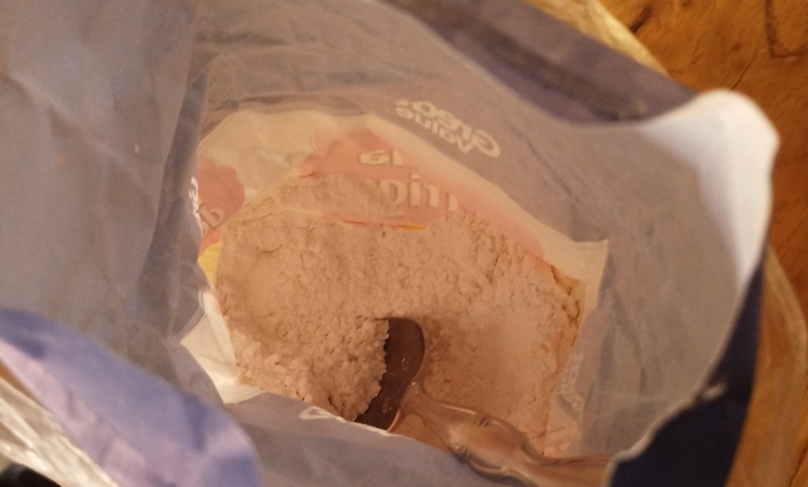
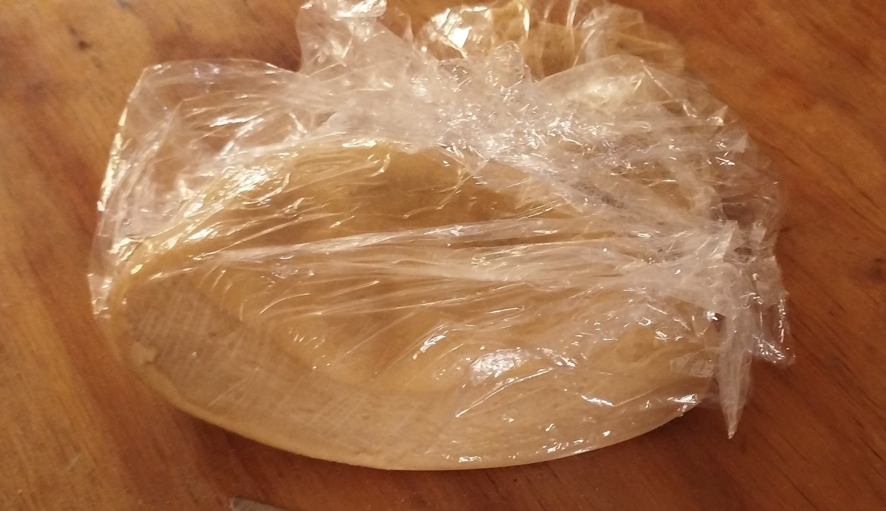
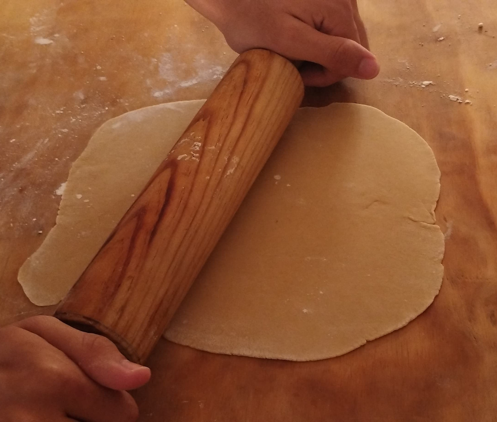
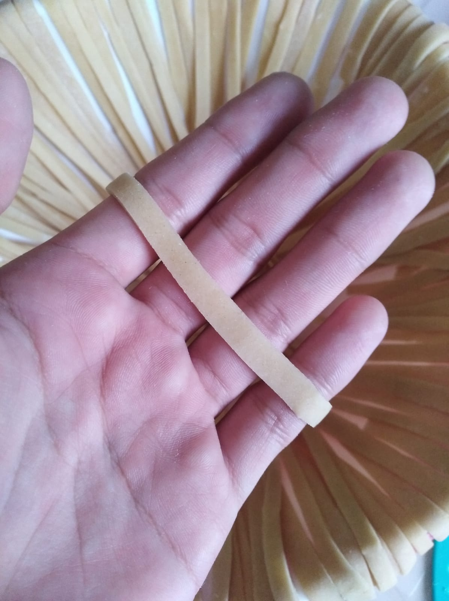
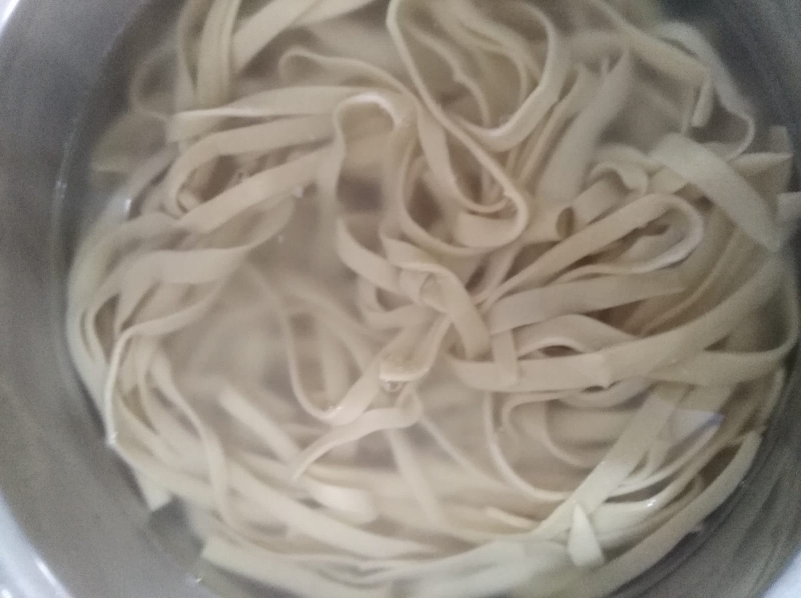
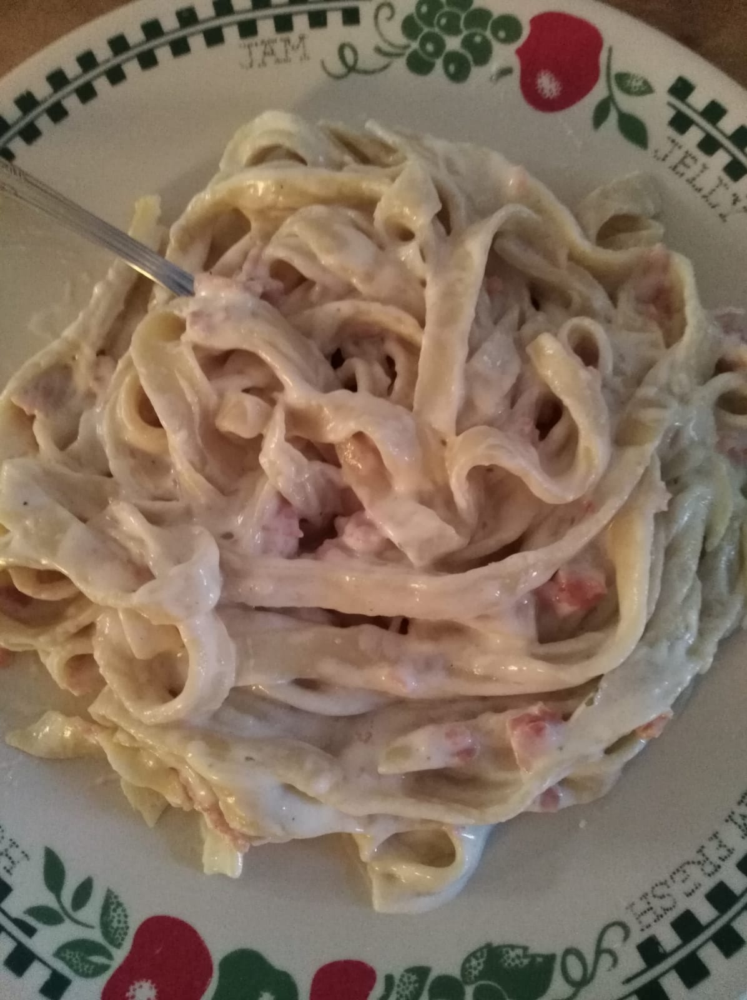

Esta receta te servira para hacer pasta fresca casera desde cero. (Es
más fácil de lo que parece) Ideal para 6 porciones y
con un tiempo de preparación de aproximadamente 1 hora.
🌿 Ingredientes 🌿
Harina de trigo

400gr para 6 porciones
Huevo
4; (más o menos 1 huevo por cada 100gr
Una pizca de sal
(un poco de agua opcional para mejorar la consistencia de la masa)
👩🏻🍳 Preparación 👩🏻🍳
En un recipiente grande, (o una superficie limpia, de preferecia)
tamiza la harina y deja un hoyo en el centro.
Añade los huevos en el hoyo y agrega una pizca de
sal.
Con un tenedor o la mano, mezcla los huevos con la harina,
integrándolos poco a poco hasta formar una masa.
Pasa la masa a una superficie enharinada y amasa durante 10 minutos
o hasta que quede suave y elástica.
Envuelve la masa en film transparente y déjala reposar unos 30
minutos.

Envuelve la masa en film
Después del reposo, divide la masa en partes y extiéndela con un
rodillo o una máquina de pasta hasta obtener el grosor deseado.

Extiende la masa con un rodillo
Corta la masa en tiras para hacer fettuccine o en
láminas para lasaña.

Corta la masa en tiras
Cocina la pasta en agua hirviendo con sal durante 2-3 minutos, ¡y
disfruta!

Cocina la pasta en agua hirviendo

¡Una de las muchas maneras de preparar el fettuccine! (creditos a mi
hermano por la pasta)
💡 Tips 💡
Aquí algunos consejos:
Consejo: Si la masa está muy seca, añade un poco de
agua; si está muy pegajosa, agrega harina.
Variantes: Puedes usar harina integral para una
pasta más saludable.
Porciones: Ajusta las cantidades según el número de
personas.